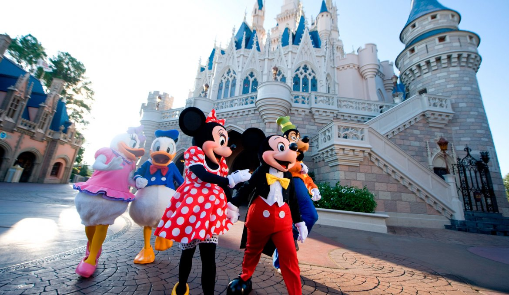
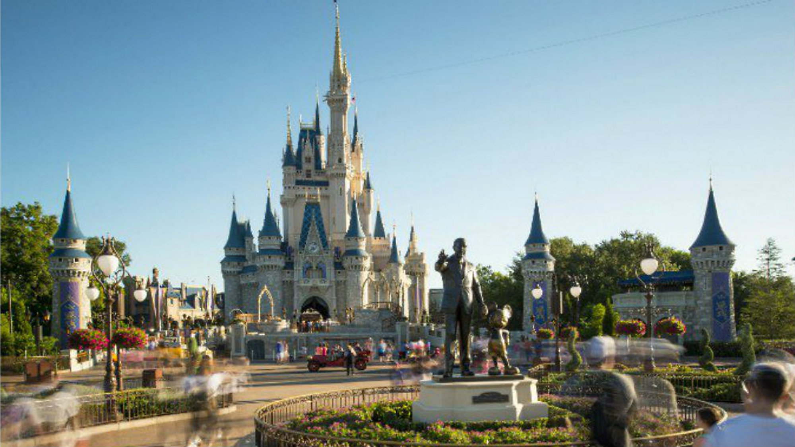

Walt Disney World Resort, comumente conhecido como Walt Disney World e informalmente Disney World, é o resort de entretenimento mais visitado em todo o mundo, situado em Bay Lake, Flórida, próxima a cidade de Orlando. O resort foi aberto em 1 de outubro de 1971 e recebe anualmente mais de 52 milhões de pessoas em seus parques temáticos e hóteis.
Abrangendo 11.106 hectares, pertence e é operada por The Walt Disney Company através da divisão de seus parques e resorts e é o lar de quatro parques temáticos, dois parques aquáticos, vinte e sete resorts temáticos (excluindo mais nove que estão no local, mas não pertencente ao The Walt Disney Company), dois spas e centros de ginástica, cinco campos de golfe, e outros locais de lazer, esporte, compras e entretenimento. Magic Kingdom foi o primeiro parque do complexo, seguido de Epcot, Disney's Hollywood Studios e Disney's Animal Kingdom, abertos entre as décadas de 1980 e 1990.
Fonte: